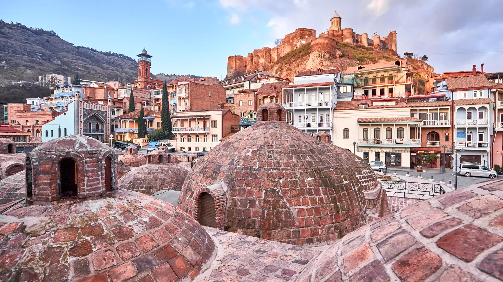
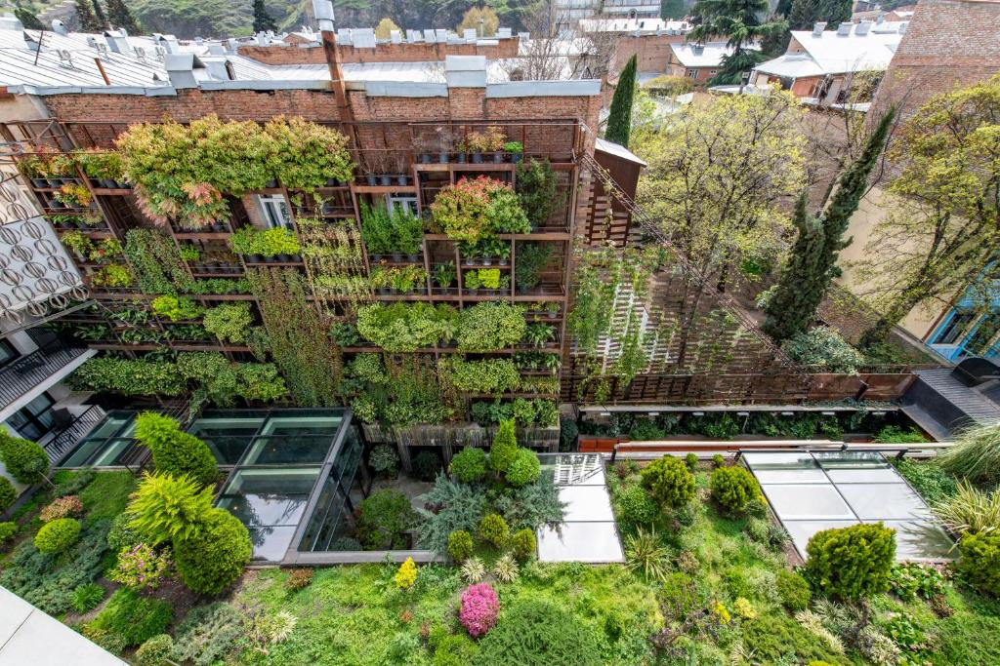
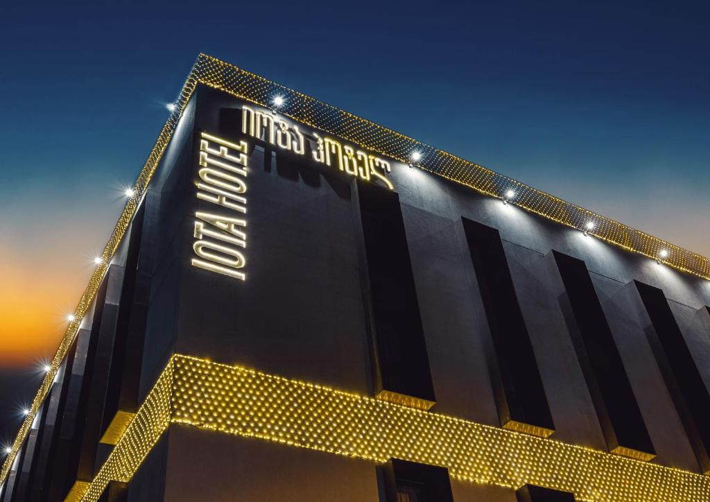
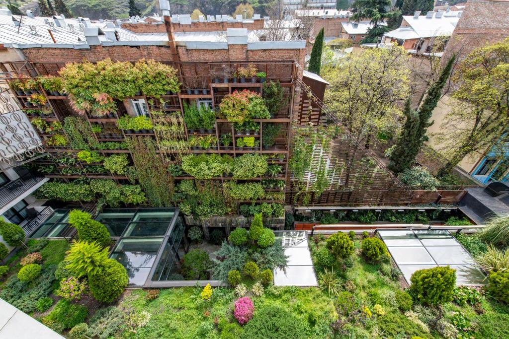
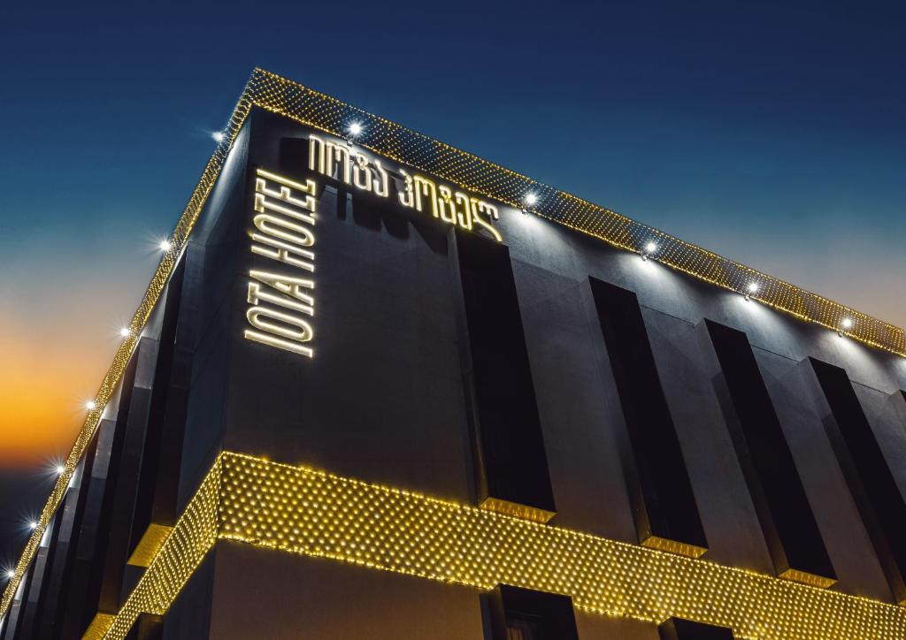
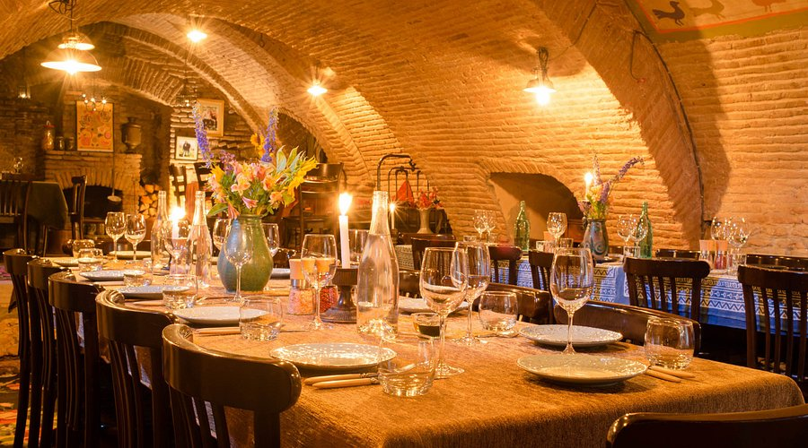
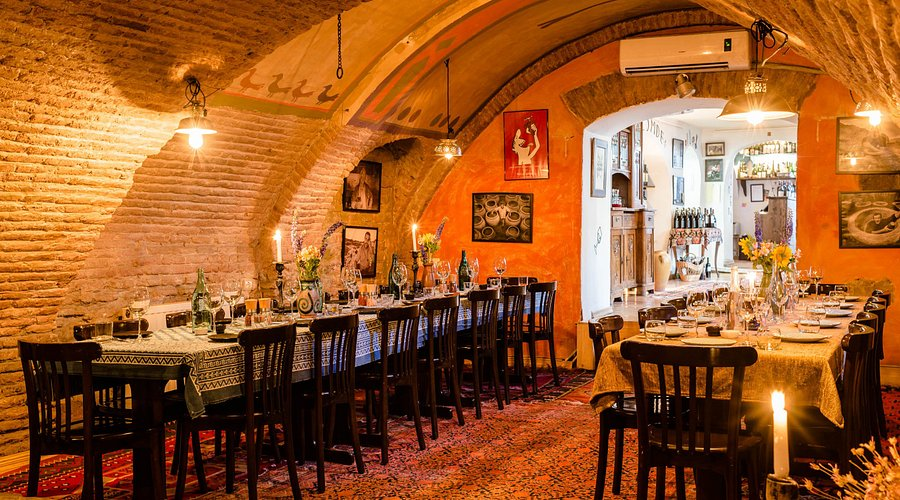
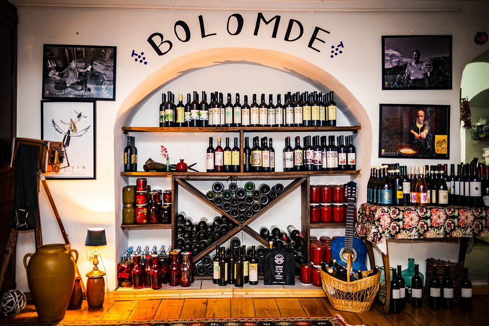

About Kartli
Kartli is the central historical region of Georgia, playing a crucial role in the formation of the country. It includes the broad plains of the Mtkvari (Kura) River basin, strategic routes, and cultural layers from many eras. The main center of Kartli is Tbilisi, whose development transformed the region into a political and economic powerhouse. The ancient towns, fortresses, and cathedrals located here are considered symbols of Georgian statehood. Fertile lands, a friendly natural environment, and centuries-old traditions give Kartli its unique identity. Today, the region remains an important center where history and modern life blend organically. Crafts, agriculture, and education historically strengthened the local community, while natural landscapes and river resources supported economic sustainability, forming a strong regional identity throughout the centuries.
Photo Gallery


Places to Visit
Sulfur Baths
The ritual of body rejuvenation in Tbilisi has existed for centuries. Sulfur baths were used not only for relaxation, but also as a social and cultural activity. In the past, mothers-in-law even evaluated brides’ beauty here, and bath items were often included in dowries. The sulfur pools were the main resort area of old Tbilisi.
The Capital – Tbilisi
Tbilisi is the capital of Georgia, located in the valley of the Mtkvari River. The city is rich with historic neighborhoods, the Old Town, a fortress-city, and ancient churches. Modern architecture blends harmoniously with historical sites. Cultural events and museums offer visitors a fascinating experience. Tbilisi is also famous for its sulfur baths and warm hospitality.

Sameba – The Tallest Church in Tbilisi
The Holy Trinity Cathedral, known as Sameba, is a major Orthodox church in Tbilisi. It is an example of modern architecture, featuring characteristic domes and artistic decorations. The cathedral serves not only as a religious center but also as a cultural and tourist attraction, drawing thousands of visitors every year.

Hotels & Restaurants
IOTA Hotel Tbilisi
IOTA Hotel Tbilisi is located in Tbilisi, 300 meters from Freedom Square, and offers free WiFi throughout the property. Guests can enjoy the on-site restaurant and garden. All rooms include a flat-screen TV, a safe, and a private bathroom. Some rooms also feature a terrace or balcony. For guests’ comfort, bathrobes, slippers, and free toiletries are provided. The hotel offers 24-hour front desk service.
 



POLIPHONIA – Restaurant
POLIPHONIA is a natural wine restaurant offering wild, seasonal, and local ingredients. Just as the harmonies of polyphonic singing can feel electric and intense, we strive to achieve this same balanced tension in the wines and dishes served in our creative and informal dining rooms.
  